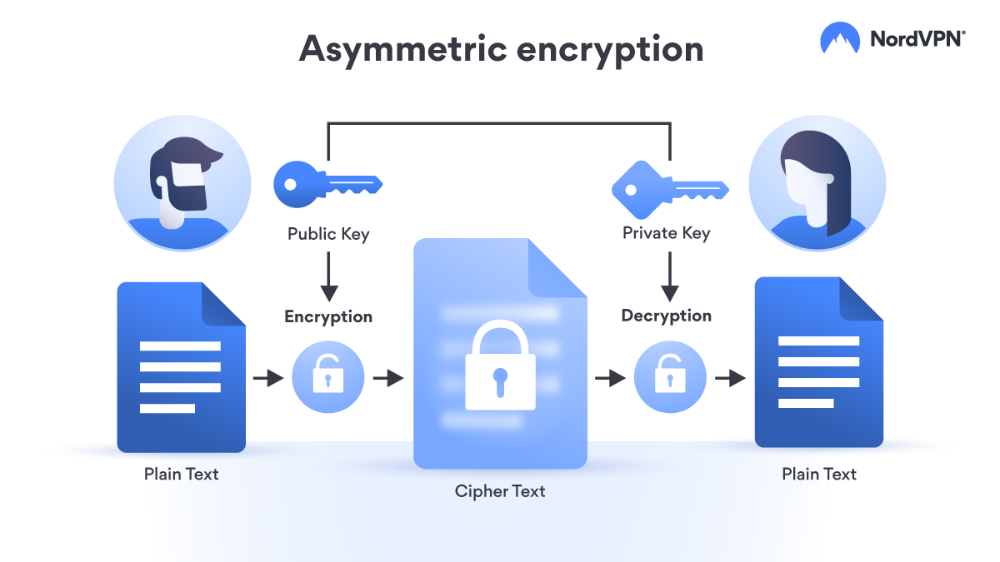

¿Qué es una clave?
Una clave es la información necesaria para llevar los datos de un formato hacia otro. La clave es, básicamente, el conocimiento que tienes para cambiar los caracteres correctamente en el alfabeto para descifrar un mensaje. Con los sistemas de cifrado modernos, un archivo contiene la información necesaria para cifrar o descifrar la información.
Tipos de cifrado según sus claves
Cifrado Simétrico
El cifrado simétrico, también llamada clave privada, las partes comunicantes deben tener la misma clave para lograr una comunicación segura. Un ejemplo de clave simétrica es la máquina Enigma del ejército alemán. Había configuraciones clave para cada día. Cuando los Aliados descubrieron cómo funcionaba la máquina, pudieron descifrar la información codificada dentro de los mensajes tan pronto como pudieron descubrir la clave de cifrado para las transmisiones de un día determinado. Esta técnica de cifrado es la más antigua que existe, aún así, sigue ofreciendo un alto nivel de seguridad. Se basa en la utilización de una única clave secreta que se encargará de cifrar y descifrar la información. La criptografía simétrica fue el primer método empleado para el cifrado de la información, utilizando la misma contraseña tanto para el cifrado como el descifrado, por tanto, es fundamental que todos los usuarios que quieran cifrar o descifrar el mensaje, tengan esta clave secreta, de lo contrario, no podrán hacerlo. Gracias a la criptografía simétrica, podremos realizar comunicaciones o almacenar archivos de forma segura.

Cifrado Asimétrico
El cifrado asimétrico, o clave pública, es una solución al problema de gestión de claves que se encuentra en el cifrado de clave privada. Hay un par de claves utilizadas, una clave pública y privada. La clave pública se distribuye ampliamente a cualquiera que quiera comunicarse en privado con la otra parte. Esa parte tiene la clave privada, que está asociada a la clave pública. La clave pública estará disponible para todos, sin embargo, la clave privada nunca será compartida. La criptografía asimétrica o clave pública suprime el problema de transmisión segura de la clave y permite la firma electrónica. No reemplaza, sin embargo, a los sistemas simétricos, ya que los tiempos de cálculo son evidentemente más cortos con los sistemas simétricos que con los asimétricos.
